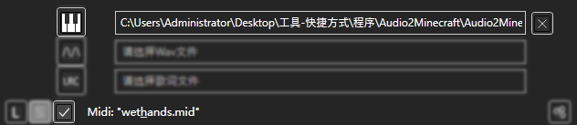
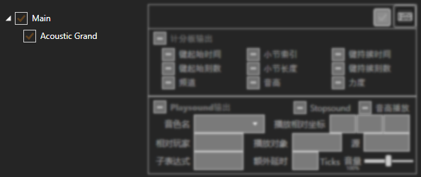
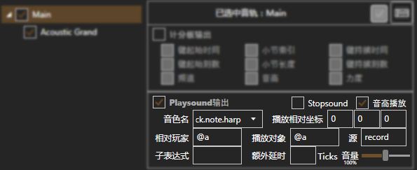
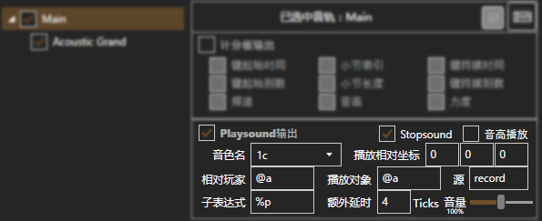
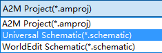
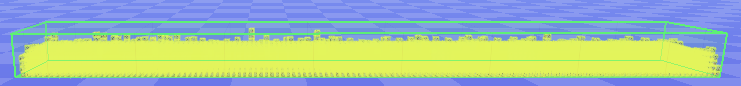

Wet Hand - C418
简单Midi的一键生成
导入Midi

选择Mid文件后，点击左下处"对勾"导入文件。

导入Midi后，在Midi设置的左侧列表中，选择一个音轨/乐器。
设置Midi

如图展示的是以原版音符盒音色输出的设置。
音色名：block.note.harp，播放音高：√
- 音色名即原版playsound中的音效名。
- 启用播放音高后，Midi中的音高将被自动换算为适用于playsound的音高。

如图展示的是以soma资源包音色输出的设置。
音色名：1c，子表达式：%p，Stopsound：√，额外延时：4
- 音色名即soma资源包中的乐器id，"1c"表示长音大钢琴。
- 由于soma资源包是使用音效名称来表示音高的，子表达式"%p"即用于继承音高，如音高为72时，playsound中实际的音效名将是"1c.72"。
- 启用Stopsound后，键结束时将会执行stopsound命令来终止播放。
- 将额外延时设为4刻，那么stopsound将在键结束4刻后执行，即长音额外播放4刻。

如图展示的是以Realpiano资源包音色输出的设置。
音色名：lkrb，子表达式：piano.p%pfff
- 音色名即Realpiano资源包中的通用头名称，即"lkrb"。
- Realpiano资源包中有多种力度的钢琴音色，音效名通式为"piano.p + 音高 + 力度"，如图中我们使用"piano.p%pfff"，"%p"即继承音高，"fff"即表示力度强。
导出红石音乐
点击"S"，保存文件
选择"Universal Schematic"，导出适用于MCEdit的schematic文件。
进入MCEdit放置schematic并保存即可。示例工程下载
A2M自带本示例。A2M-UI中的"demo"文件夹即本工程。